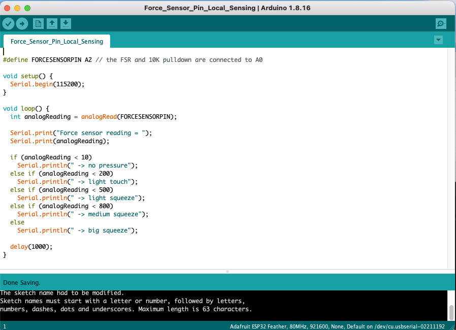
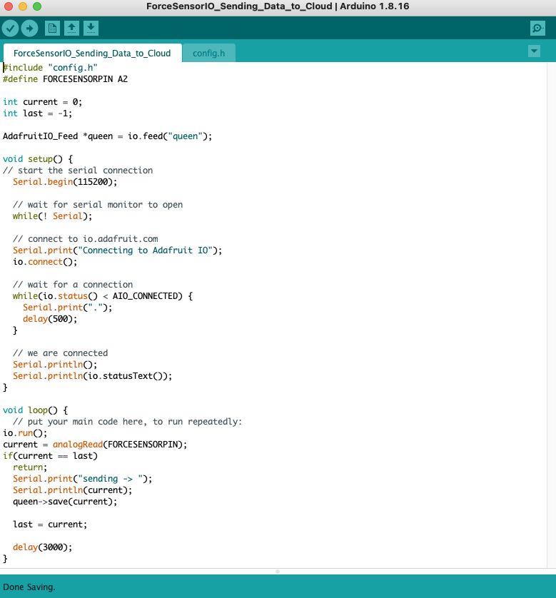

The Brief: Working with a partner you will construct two electronic beings capable of percieving some aspects of the environment around them. Use whatever sensors are necessary to create their "worldview." Then you will need to connect them into a network that would enable them to communicate their findings, and respond to the communications of their counterpart.
For this project I created a creature that would measure the anger of a mad queen on a faraway planet through a force sensor hidden inside a stress ball. The data from the force sensor travels through Adafruit IO to alert the people living on the planet of the queen's mood.
Vintage film clips and soundtrack taken from Queen of Blood (1966)
This is the code I used to measure the force locally
This is the code I used to sent the measurement of the force sensor data to Adafruit IO
Video of theserial monitor registering the force sensor data